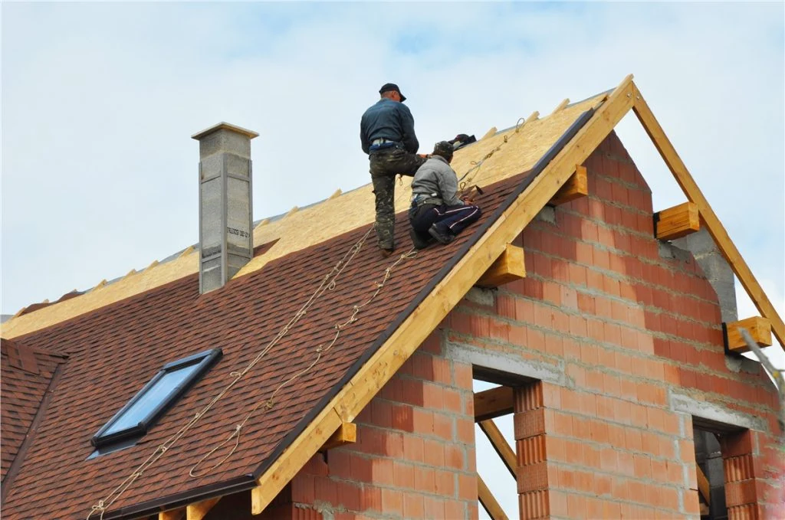

Покривни услуги · цяла България
Ремонт на покриви в София и цяла България
Теч, разместени керемиди или повреден покривен детайл? Топ Покрив е екип от майстори за покриви с база в София. Извършваме ремонти, хидроизолация, работа по улуци и обшивки в цяла България. След безплатен оглед уточняваме необходимите дейности и изготвяме писмена оферта.

Кога покривът има нужда от ремонт?
Петна по тавана след дъжд, счупени или разместени керемиди, провиснали участъци и запушени или откачени улуци са сигнали за проверка. Видимият теч невинаги показва къде водата влиза под покритието. При оглед трябва да се прегледат и връзките около комини, обшивки и водосточни елементи.
Ако проблемът е нов, снимайте засегнатото място и отбележете кога се появява влагата. Това помага при първия разговор. Вижте и признаците за повреден покрив.
Какви дейности може да включва ремонтът?
Керемиди и покритие. Подмяна на счупени елементи, пренареждане на разместени керемиди и проверка на основата под тях според състоянието на покрива.
Течове и хидроизолация. Намиране на причината за проникване на вода и избор на решение според вида покрив и засегнатата площ.
Улуци, комини и обшивки. Проверка и ремонт на детайлите, по които водата се отвежда или може да проникне в конструкцията.
Не всеки проблем изисква цялостна подмяна. Обхватът се определя след преглед на място; ако има повреда в носещата конструкция, тя трябва да се включи в офертата.
Търсите майстор за покрив в София?
Петно по тавана често изглежда като задача за майстор за дома, но причината може да е в покрива: керемиди, връзка около комин, улук или хидроизолация. Затова е важно да се провери покривът, преди да се боядисва или поправя вътрешната стена. Работим по покрива и водоотвеждането; за други вътрешни ремонти потърсете съответния специалист.
При запитване за обект в София кажете дали покривът е скатен или плосък, кога се появява течът и има ли безопасен достъп за оглед. Снимки на видимата повреда и на засегнатото помещение помагат за първия разговор, но окончателният обхват се определя на място. Ако обектът е извън София, посочете населеното място — работим в цяла България.
Как протича работата?
1. Разговор и оглед. Описвате проблема по телефон или имейл. Уговаряме оглед, за да се прецени състоянието на покрива.
2. Писмена оферта. Уточняваме дейностите, материалите, срока и цената преди започване на работа.
3. Ремонт и предаване. Изпълняваме уговорения обхват и преглеждаме резултата с клиента. Гаранционните условия се описват писмено според вида работа.
От какво зависи цената за ремонт на покрив?
Най-силно влияят площта, видът покритие, достъпът до покрива, състоянието на конструкцията и това дали ремонтът е локален или цялостен. Публикувана цена без оглед може да пропусне скрити повреди. Поискайте оферта с отделни дейности и материали, за да знаете какво е включено.
Евтин ремонт на покрив има смисъл, когато решава причината за проблема, а не само прикрива теча за кратко. Сравнявайте оферти по обхват, материали, срок и писмена гаранция, вместо само по крайна сума. При малка локална повреда може да не е нужна подмяна на целия покрив; това се преценява след оглед.
Прочетете по-подробно кои фактори определят цената за ремонт на покрив.
Ремонт на покриви в цяла България
Базирани сме в София и работим в цяла България. Посочете населеното място, вида покрив и кратко описание на проблема, когато се свързвате с нас.
Попитайте за оглед и оферта
Разкажете ни какъв е проблемът с покрива и къде се намира обектът.